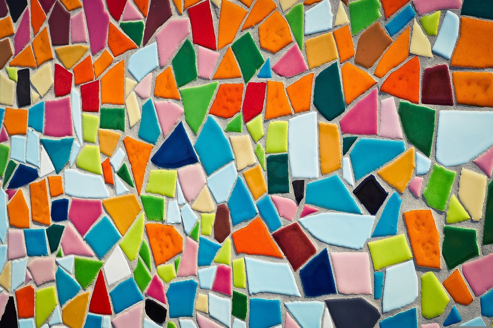

Arte Abstracto
Llamamos arte abstracto a un estilo de la expresión de las artes plásticas (pintura y escultura) principalmente, que en lugar de representar figuras concretas y reconocibles del mundo real (como hace el arte figurativo), propone una realidad distinta a través de un lenguaje propio e independiente de formas, colores y líneas El arte abstracto es una forma de expresión de sentimientos artísticos que prescinde de toda figuración y propone una nueva realidad distinta a la natural. Usa un lenguaje visual de forma, color y línea para crear una composición que puede existir con independencia de referencias visuales del mundo real.

Por un lado al arte abstracto puede ser expresivo el cual se considera subjetivo y espontáneo, improvisado a veces, donde el protagonismo es de la expresividad del artista, que prescinde de estructura y se vuelca en el gesto, el material y el sentimiento que provoca la obra. Es por tanto altamente ambigüo e interpretable

Por otro lado el arte abstracto se puede considerar geométrico el cual pretende ser objetivo y universal, planificado, en la que la composición es estructurada y que evita toda expresividad mediante el uso de la geometría. Suele defender una factura impersonal y pretende evocar claridad y precisión.

El arte abstracto rompió con la necesidad de representar objetos concretos, dando cabida a los pensamientos y las nociones mentales más difusas.Las obras abstractas exigen del espectador que se aproxime a ellas de modo intuitivo, menos tradicional.
Las esculturas abstractas se apoyan en el principio de la tridimensionalidad y en la geometría, a veces dándole protagonismo al color y ademas las pinturas abstractas proponen un lenguaje propio de forma, color y línea cuyas reglas pertenecen al artista.